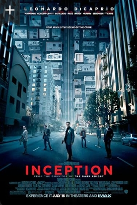

Movies are a powerful form of art and entertainment that not only tell stories but also inspire emotions, spark imagination, and connect people across different cultures and experiences.
One of my favorite movies is Inception, directed by Christopher Nolan. I love it because it blends action, mystery, and deep thought in such a unique way. The idea of entering people’s dreams to steal or plant ideas is both exciting and mind-bending, and it kept me thinking even after the movie ended. The stunning visuals, from cities folding in half to zero-gravity fights, make the film unforgettable. At the same time, the emotional story of Dom Cobb who struggles with his past and his family, adds a powerful human side to all the action. It’s a movie that challenges the mind while still being thrilling and entertaining.